Problemas de ecuaciones
Problemas de ecuaciones de primer grado
1Un padre tiene 35 años y su hijo 5. ¿Al cabo de cuántos años será la edad del padre tres veces mayor que la edad del hijo?
2Si al doble de un número se le resta su mitad resulta 54. ¿Cuál es el número?
3La base de un rectángulo es doble que su altura. ¿Cuáles son sus dimensiones si el perímetro mide 30 cm?
4En una reunión hay doble número de mujeres que de hombres y triple número de niños que de hombres y mujeres juntos. ¿Cuántos hombres, mujeres y niños hay si la reunión la componen 96 personas?
5Se han consumido 7/8 de un bidón de aceite. Reponemos 38 l y el bidón ha quedado lleno hasta sus 3/5 partes. Calcula la capacidad del bidón.
6Una granja tiene cerdos y pavos, en total hay 35 cabezas y 116 patas. ¿Cuántos cerdos y pavos hay?
7Luís hizo un viaje en el coche, en el cual consumió 20 l de gasolina. El trayecto lo hizo en dos etapas: en la primera, consumió 2/3 de la gasolina que tenía el depósito y en la segunda etapa, la mitad de la gasolina que le queda. Se pide:
1Litros de gasolina que tenía en el depósito.
2Litros consumidos en cada etapa.
8En una librería, Ana compra un libro con la tercera parte de su dinero y un cómic con las dos terceras partes de lo que le quedaba. Al salir de la librería tenía 12 €. ¿Cuánto dinero tenía Ana?
9La dos cifras de un número son consecutivas. La mayor es la de las decenas y la menor la de las unidades. El número es igual a seis veces la suma de las cifras. ¿Cuál es el número?
10Las tres cuartas partes de la edad del padre de Juan excede en 15 años a la edad de éste. Hace cuatro años la edad de la padre era doble de la edad del hijo. Hallar las edades de ambos.
11Trabajando juntos, dos obreros tardan en hacer un trabajo 14 horas. ¿Cuánto tiempo tardarán en hacerlo por separado si uno es el doble de rápido que el otro?
12Halla el valor de los tres ángulos de un triángulo sabiendo que B mide 40° más que C y que A mide 40° más que B.
- 1
- 2
- 3
- 4
- 5
- 6
- 7
- 8
- 9
- 10
- 11
- 12
Ejercicio 1 resuelto
Un padre tiene 35 años y su hijo 5. ¿Al cabo de cuántos años será la edad del padre tres veces mayor que la edad del hijo?
Años  x
x
35 + x = 3 · (5 + x )
35 + x = 15 + 3 · x
20 = 2 · x x = 10
Al cabo de 10 años.
Ejercicio 2 resuelto
Si al doble de un número se le resta su mitad resulta 54. ¿Cuál es el número?
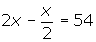

Ejercicio 3 resuelto
La base de un rectángulo es doble que su altura. ¿Cuáles son sus dimensiones si el perímetro mide 30 cm?
Altura  x
x
Base  2x
2x
2 · x + 2 · 2x = 30 2x + 4x = 30 6x = 30 x = 5
Altura  5 cm
5 cm
Base  10 cm
10 cm
Ejercicio 4 resuelto
En una reunión hay doble número de mujeres que de hombres y triple número de niños que de hombres y mujeres juntos. ¿Cuántos hombres, mujeres y niños hay si la reunión la componen 96 personas?
Hombres  x
x
Mujeres  2x
2x
Niños  3 · (x + 2x) = 3 · 3x = 9x
3 · (x + 2x) = 3 · 3x = 9x
x + 2x + 9x = 96
12x = 96 x = 8
Hombres  8
8
Mujeres  2 · 8 = 16
2 · 8 = 16
Niños  9 · 8 = 72
9 · 8 = 72
Ejercicio 5 resuelto
Se han consumido 7/8 de un bidón de aceite. Reponemos 38 l y el bidón ha quedado lleno hasta sus 3/5 partes. Calcula la capacidad del bidón.
LLamamos x a la capacidad del bidón y como hemos consumido 7/8 de su capacidad quedará:
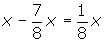
Reponemos 38 l
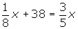
Ejercicio 6 resuelto
Una granja tiene cerdos y pavos, en total hay 35 cabezas y 116 patas. ¿Cuántos cerdos y pavos hay?
Cerdos  x
x
Pavos  35 − x
35 − x
4x + 2 · (35 − x) = 116
4x + 70 − 2x = 116
2x = 46 x = 23
Cerdos  23
23
Pavos  35 − 23 = 12
35 − 23 = 12
Ejercicio 7 resuelto
Luís hizo un viaje en el coche, en el cual consumió 20 l de gasolina. El trayecto lo hizo en dos etapas: en la primera, consumió 2/3 de la gasolina que tenía el depósito y en la segunda etapa, la mitad de la gasolina que le queda. Se pide:
Soluciones:1Litros de gasolina que tenía en el depósito.
1ª etapa  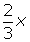
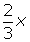
2ª etapa  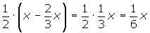
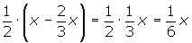
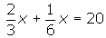
2Litros consumidos en cada etapa.
1ª etapa  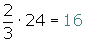
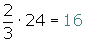
2ª etapa  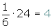
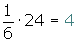
Ejercicio 8 resuelto
En una librería, Ana compra un libro con la tercera parte de su dinero y un cómic con las dos terceras partes de lo que le quedaba. Al salir de la librería tenía 12 €. ¿Cuánto dinero tenía Ana?
Total  x
x
Libro  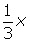
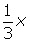
Cómic  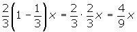
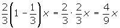
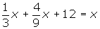
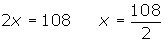
Ejercicio 9 resuelto
La dos cifras de un número son consecutivas. La mayor es la de las decenas y la menor la de las unidades. El número es igual a seis veces la suma de las cifras. ¿Cuál es el número?
Unidades  x
x
Decenas  x + 1
x + 1
Si tenemos un número de dos cifras, por ejemplo 65 podemos descomponerlo, de este modo: 6 ·10 + 5.
Nuestro número de dos cifras es: (x +1) · 10 + x.
Como este número es seis veces mayor que la suma de sus cifras: x + x + 1 = 2x + 1, tendremos:
(x +1) · 10 + x = 6 (2x + 1)
10x + 10 + x = 12 x + 6
10 x + x - 12x = 6 - 10
−x = −4 x = 4
Unidades  4
4
Decenas  4 + 1 = 5
4 + 1 = 5
Número 54
54
Ejercicio 10 resuelto
Las tres cuartas partes de la edad del padre de Juan excede en 15 años a la edad de éste. Hace cuatro años la edad de la padre era doble de la edad del hijo. Hallar las edades de ambos.
| Juan | Padre de Juan | |
|---|---|---|
| Hace cuatro años | x | 2x |
| Hoy | x + 4 | 2x + 4 |
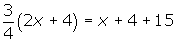
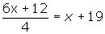
Edad de Juan: 32 + 4 = 36.
Edad del padre: 2 · 32 + 4 = 68.
Ejercicio 11 resuelto
Trabajando juntos, dos obreros tardan en hacer un trabajo 14 horas. ¿Cuánto tiempo tardarán en hacerlo por separado si uno es el doble de rápido que el otro?
| Rápido | Lento | |
|---|---|---|
| Tiempo | x | 2x |
| Hora de trabajo | 1/x | 1/2x |
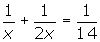
Rápido 21 horas
21 horas
Lento  42 horas
42 horas
Ejercicio 12 resuelto
Halla el valor de los tres ángulos de un triángulo sabiendo que B mide 40° más que C y que A mide 40° más que B.
C  x
x
B  x + 40
x + 40
A  x + 40 + 40 = x+ 80
x + 40 + 40 = x+ 80
x + x + 40 + x+ 80 = 180; x + x + x = 180 − 40 − 80;
3x = 60; x= 20
C = 20º B = 20º + 40º = 60º A = 60º + 40º = 100º
 Ejercicios
Ejercicios